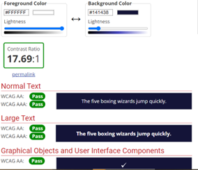

Første vi sjekket var om farge paletten vi hadde valgt for siden var lett leselig for folk med forskjellige typer farge blindhet.
Vi bruker hovedsakelig hvit til fargen på teksten, men den øverste og nederste er fargene på større skrift og fargen på noen knapper. Mens de to i midten er bakgrunns farger.

Her er en rekke tester for å se hvor god kontrastene til fargene vi bruker er.
Stedene der hvor vi har liten tekst bruker vi hvit som ifølge disse testene sier er perfekte kontraster.
Og fargene som vi bruker for større tekst funker ikke like bra som liten tekst, men passer bedre for større tekst.
Vi har også sørget for at man ikke må bruke mus for å få tilgang til alle deler av websiden.
Kombinert med at man kan bruke så lang tid på alle delene av websiden, slik at folk med funksjonshemelser kan lett navigere seg rundt på websiden i tillegg til å bruke så god tid de trenger for å gjøre det de trenger.
Vi har også prøvd å få nettsiden mer vennlig for folk med kognitive hemninger.
Vi har forsøkt å finne råd på hvordan man gjør siden mer vennlig for dyslektikere.
Ved at vi bruker sans serif fonter fordi bokstavene kan ses mindre crowded ut, og sørger for at det er lettere å vite hvor setninger starter og slutter.
Og unngår kursiv generelt, for å forhindre at teksten føles crowded.
I tillegg gått for å unngå flimrende bilder og tekst for de som har epilepsi.